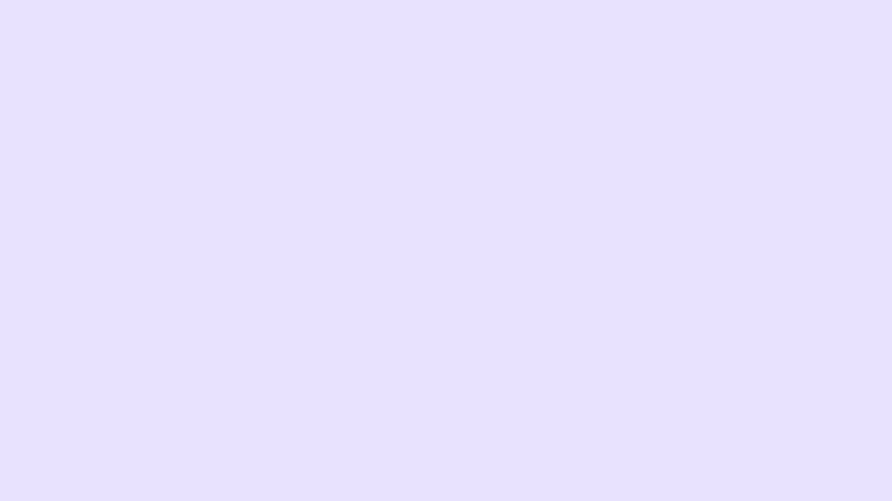

<app-navbar></app-navbar>
<app-pet></app-pet>
<app-user-pumpkins></app-user-pumpkins>


<div id="bg">
    
</div>
<div class="addToDo-button">
    <button type="button" routerLink="/todo" class="btn btn-secondary btn-lg">Add ToDo</button>
</div>

<div class="todo-container">
<div *ngFor="let toDo of toDos; let i = index" [class.active]="i == currentIndex" (mouseover)="setActiveToDo(toDo, i)">
    <div class="todo-wrapper" id="{{toDo.id}}">
        <p>Description: {{toDo.description}}</p>
        <p>Day: {{toDo.dayToDo}}</p>
        <p>Time: {{toDo.timeToDo}}</p>

        <button *ngIf="!toDo.completed" type="button" (click)="completeToDo(toDo)">Completed</button>


    </div>
</div>
</div>


<router-outlet></router-outlet> 
